Baguio, Philippines
- Baguio, situated in the mountainous region of Benguet in the Philippines, is renowned for its cool climate and scenic beauty. Known as the "Summer Capital of the Philippines," it offers lush pine forests, breathtaking mountain vistas, and vibrant cultural heritage, making it a popular destination for both local and international travelers seeking respite from the tropical heat and immersive experiences in nature and culture.
- Explore the vibrant local markets, where colorful handicrafts and fresh produce abound, or take a leisurely stroll along Session Road, the city's bustling commercial hub. Don't miss the iconic Burnham Park, a verdant oasis perfect for boating, biking, and simply enjoying nature. Baguio, with its cool climate, scenic beauty, and rich cultural tapestry, invites you to embrace the charm of the City of Pines, a haven for those seeking tranquility and natural splendor in the heart of the Philippines. Baguio City is approximately 250 kilometers north of Manila, situated in the Province of Benguet

 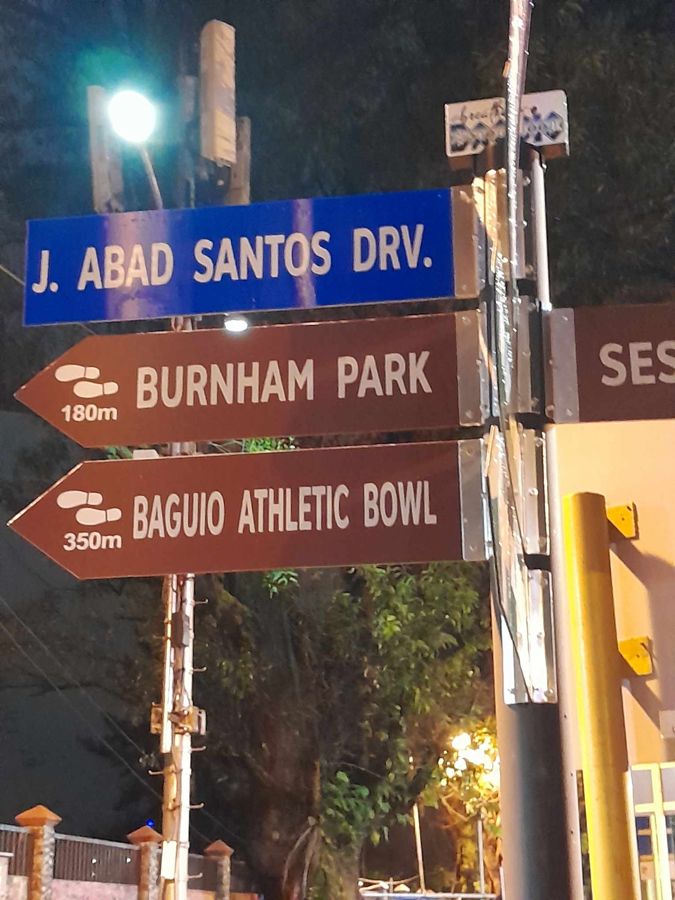
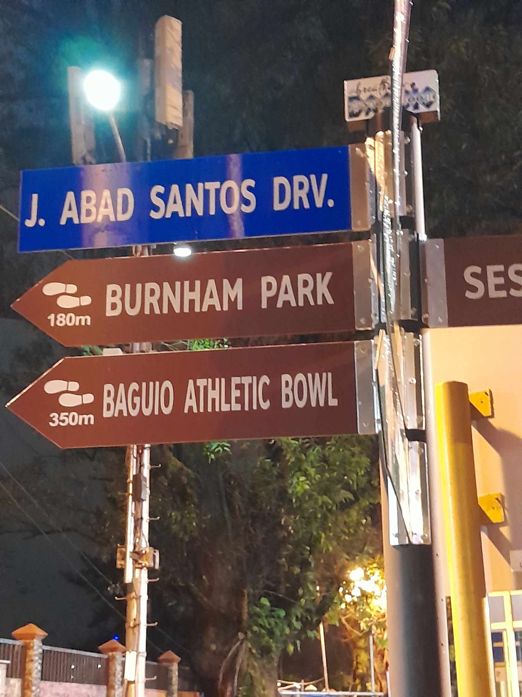
 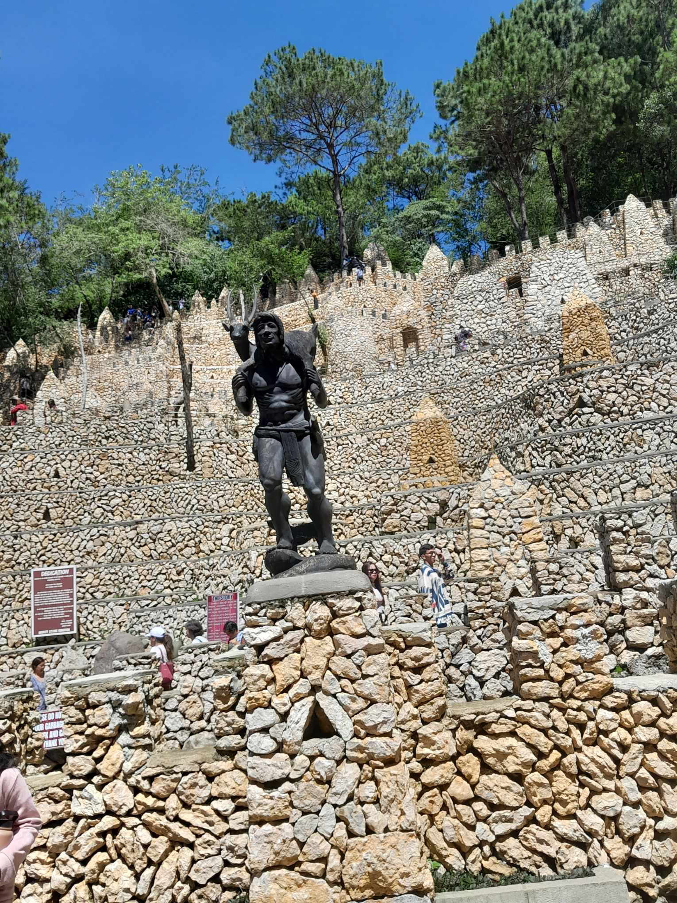
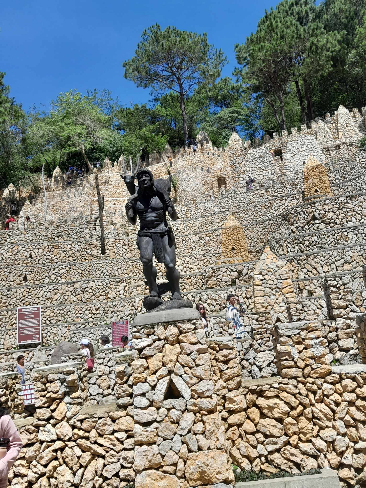

 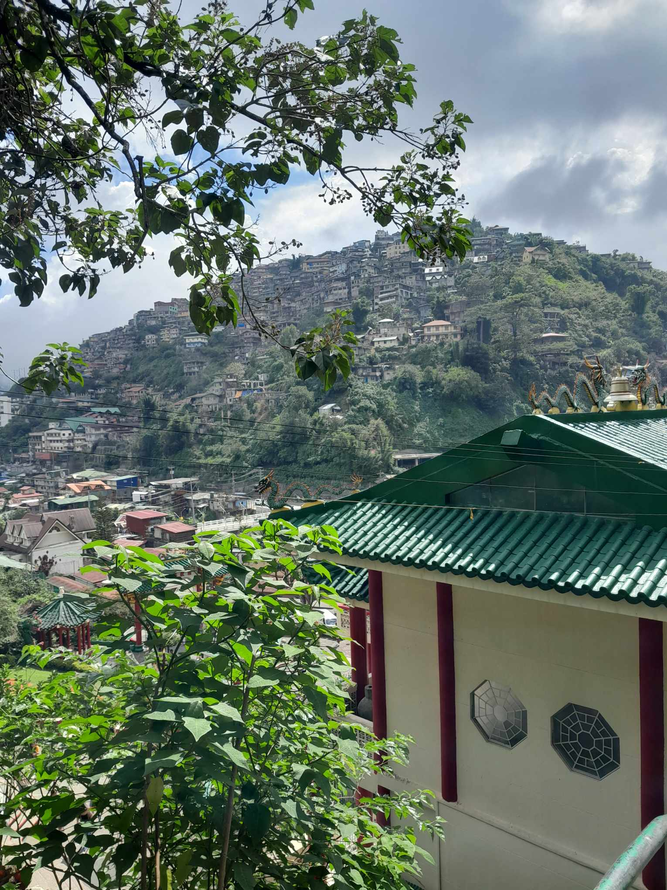
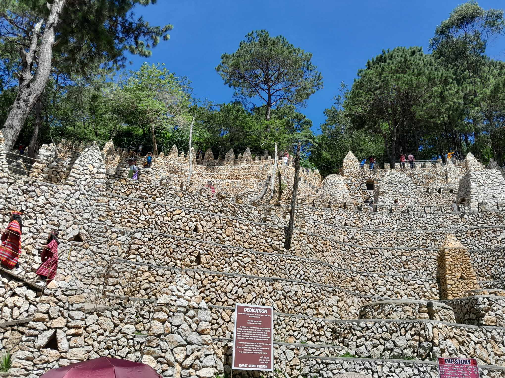
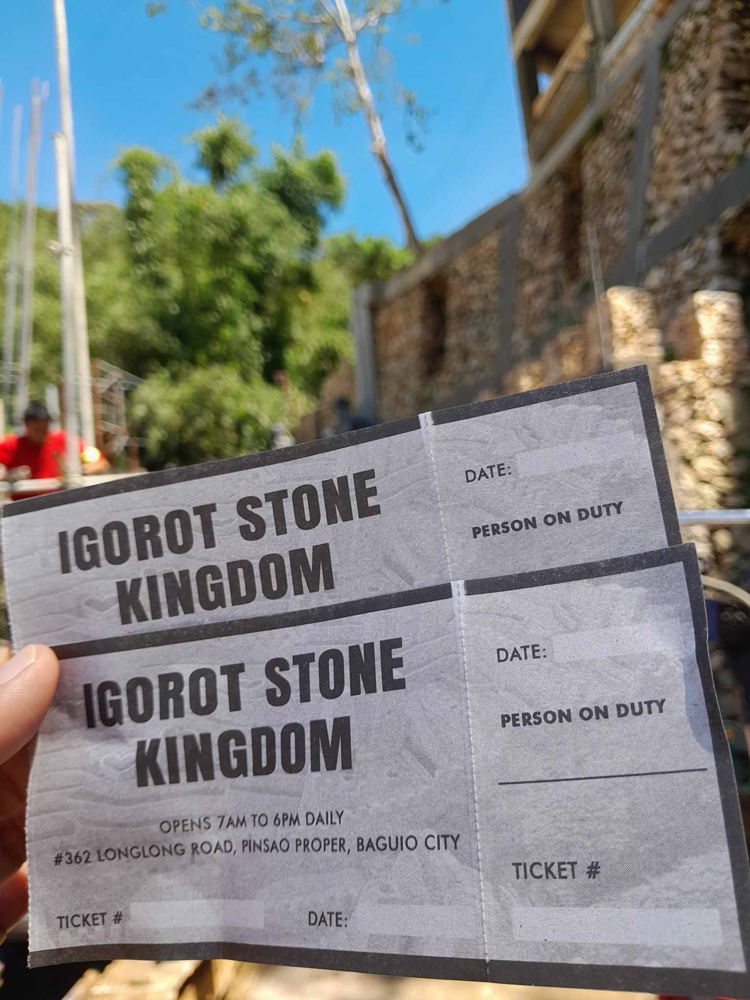
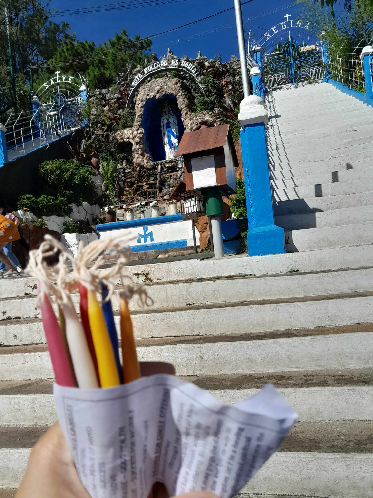
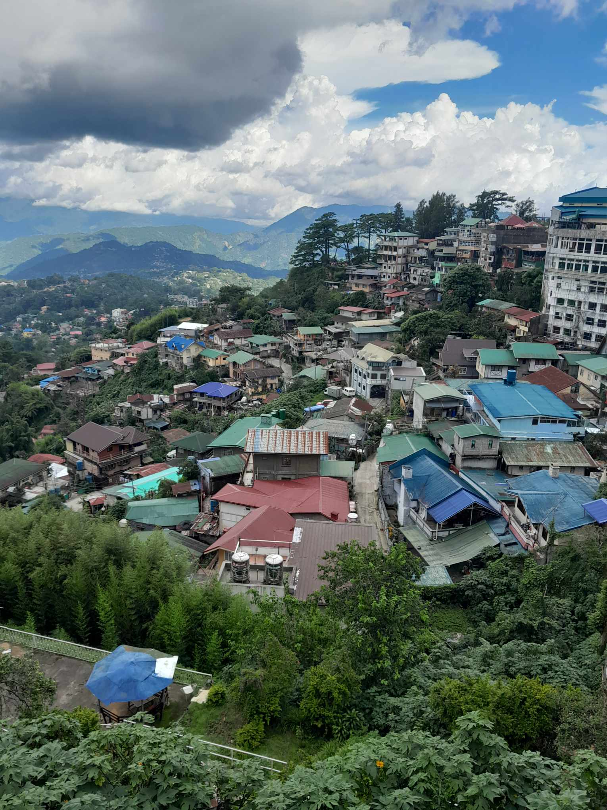
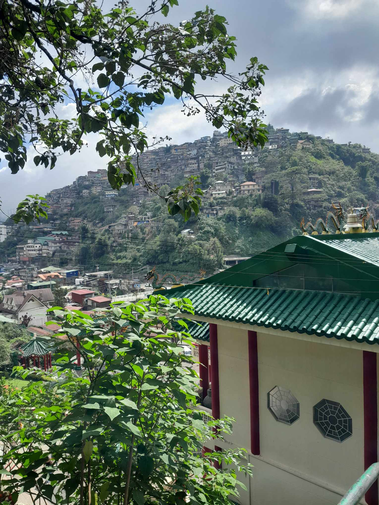
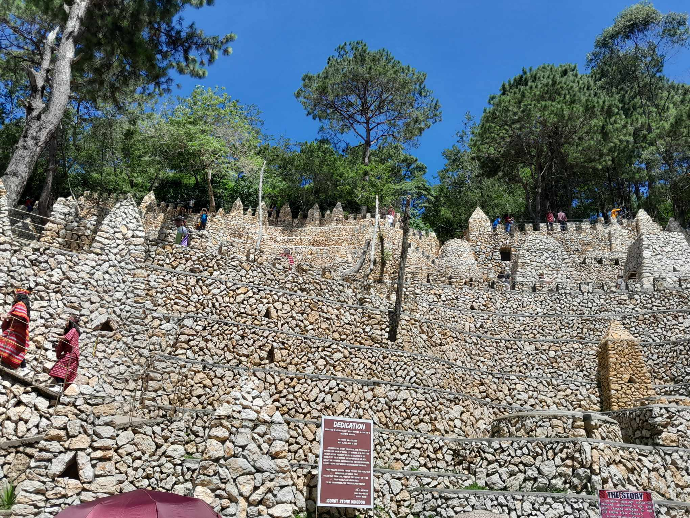
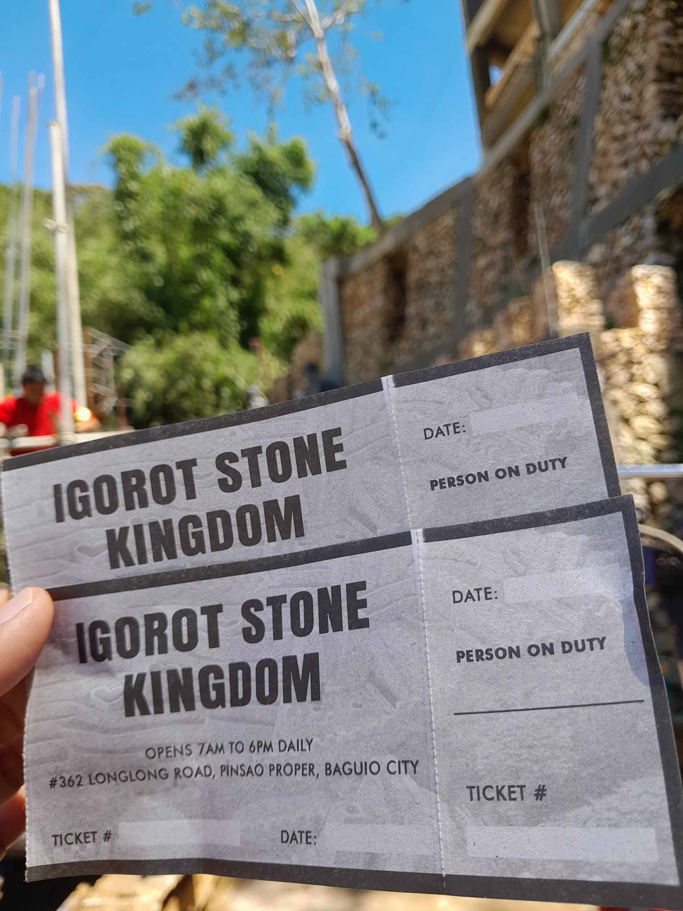
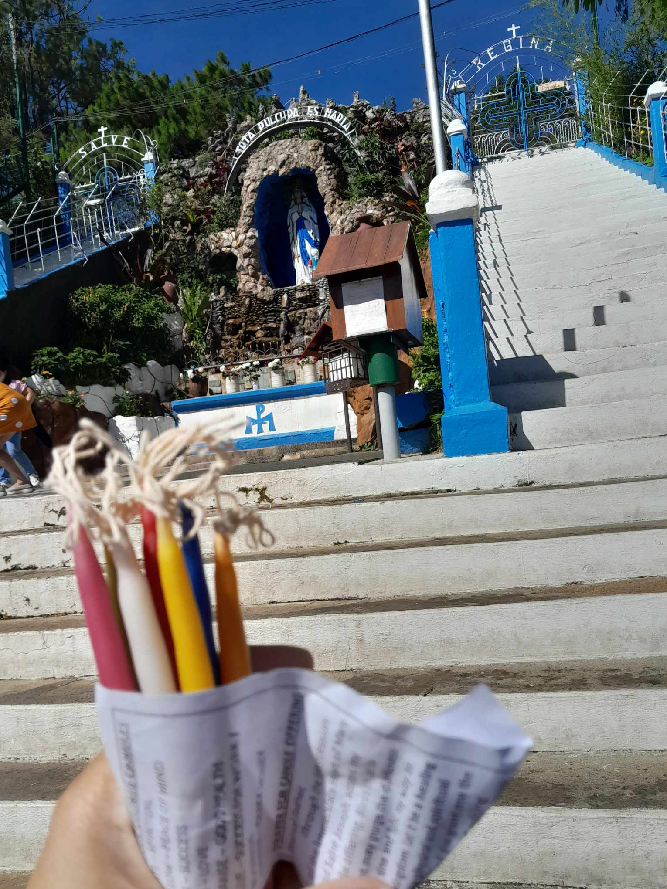
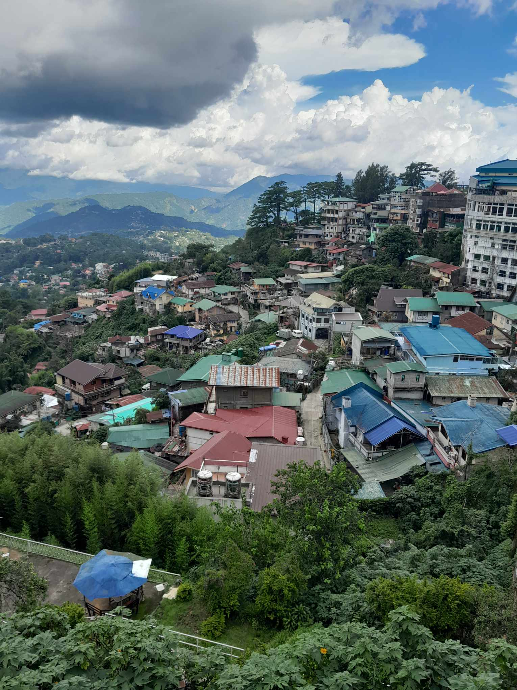
How to Get to:
The travel time from Manila to Baguio varies depending on the mode of transportation and the specific route taken. Typically, if you're traveling by private car or bus, the journey takes approximately 4 to 6 hours, depending on traffic conditions, road conditions, and the exact starting and ending points of your journey. If you opt to take a bus, travel times may vary based on the bus company, the number of stops, and the time of day you travel. Buses from Manila to Baguio usually depart from several terminals in Manila, such as Cubao, Pasay, or Sampaloc.